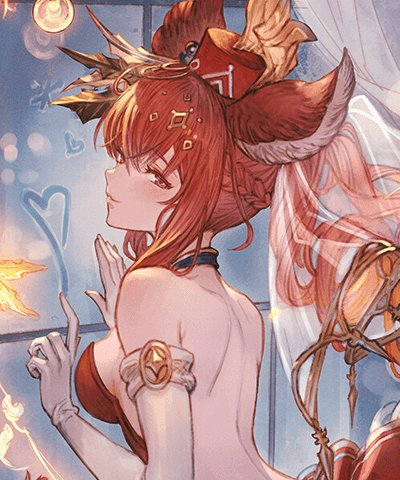

土アンスリア(クリスマス)

基本資訊
| 定位 | 回復 |
| 得意武器 | 格鬥/樂器 |
| 種族 | 獸耳 |
| CV | 浅川悠 |
立繪
上限解放前
上限解放後
奧義
| エテルナ･テゾーロ | |
| 4.5倍土屬性傷害 我方全體 ・10%土屬性追擊×4T ・激奏Lv上升×2T |
技能
 CD:12 |
セイントヴェール |
| 土屬性角色強化(不可消除/受到2次傷害解除) ・弱體耐性+100% ・免疫驅散效果 ・受到傷害轉為水屬性 ・水屬性傷害-20% |
|
 CD:24 |
アンコールステップ |
| 自己和主角2動×4T | |
 不可再使用 |
聖艶の舞 |
| 自己和主角聖艶の舞效果(不可消除) ・奧義發動時，自己全迴避(1次) #不可再使用 |
被動技能
 |
舞い上がる想い |
| 自己和主角成為敵方攻擊目標時，迴避率約+20% #迴避成功時，我方全體 ・HP回復(最多1500) ・激奏延長1T |
|
|
夢みた聖夜 |
| 受到主角的回復技能(綠技)和強化技能(黃技)時，自己技能CD-2 |
武器